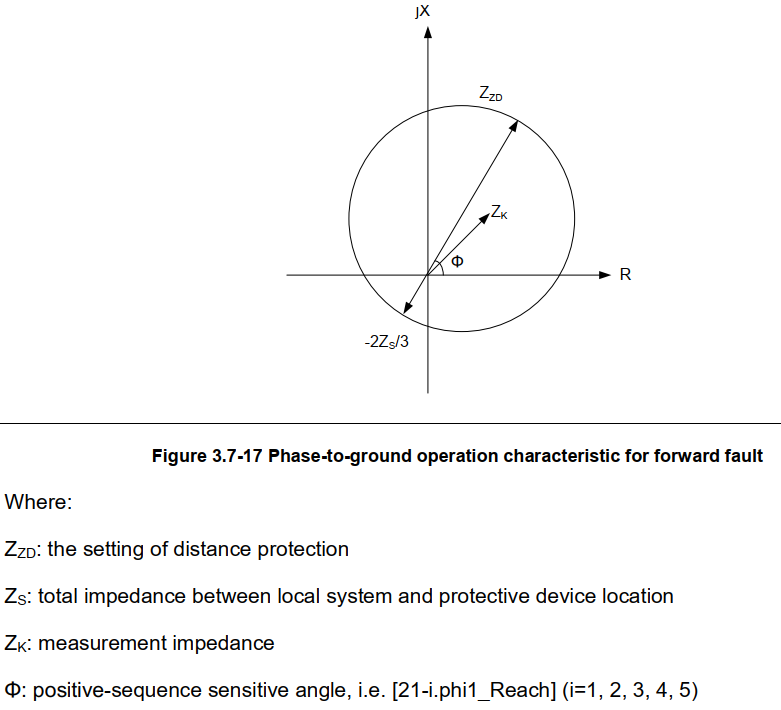
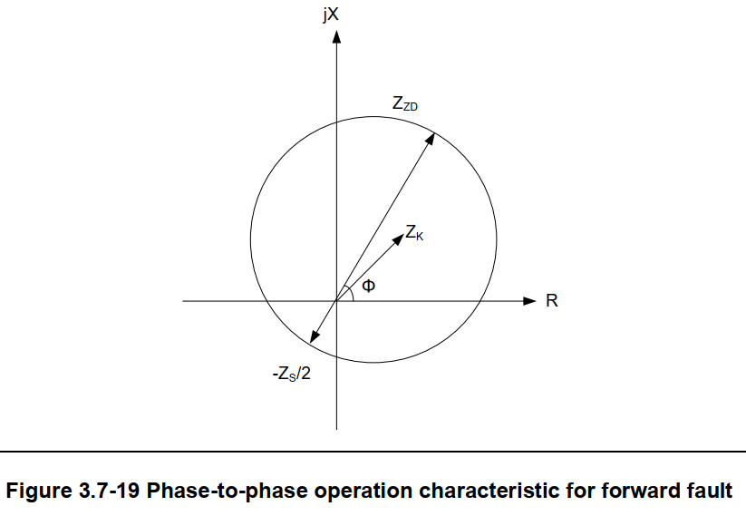
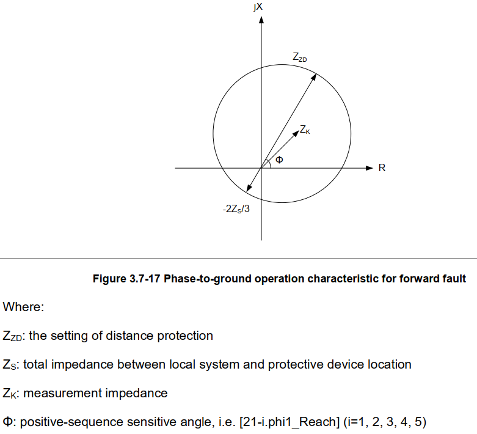
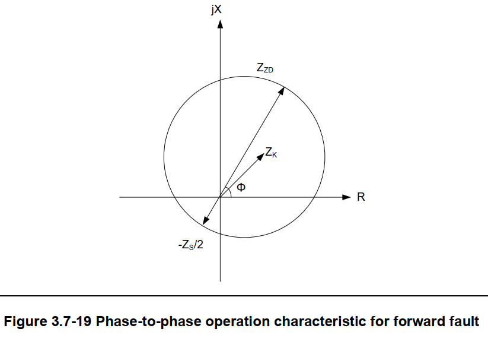

Вырез нагрузки
Круговая характеристика ДЗ (фаза-земля)
Круговая характеристика ДЗ (фаза-фаза)
Вырез нагрузки
Круговая характеристика ДЗ (фаза-земля)
Круговая характеристика ДЗ (фаза-фаза)
 Полигональная
характеристика ДЗ
Полигональная
характеристика ДЗ
") Полигональная характеристика ДЗ (прямо)
Полигональная характеристика ДЗ (прямо)
") Полигональная характеристика ДЗ (назад)
Полигональная характеристика ДЗ (назад)